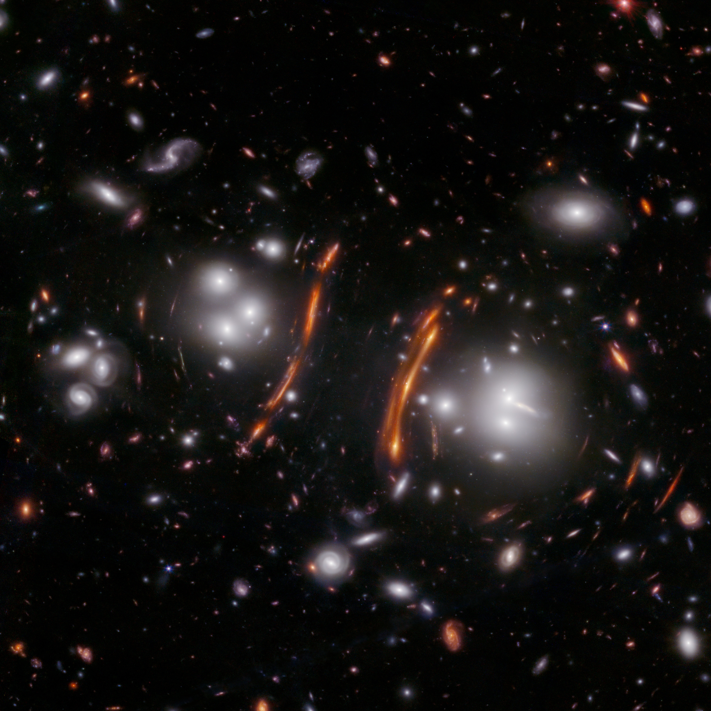
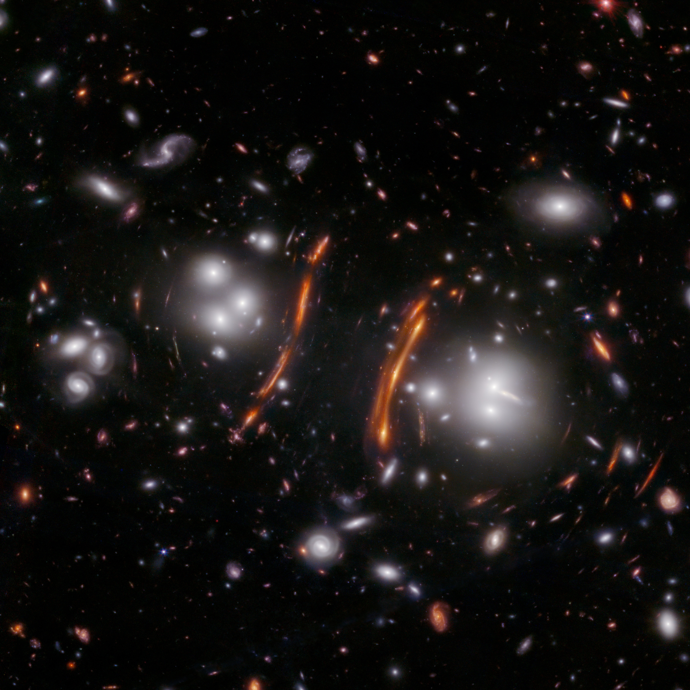
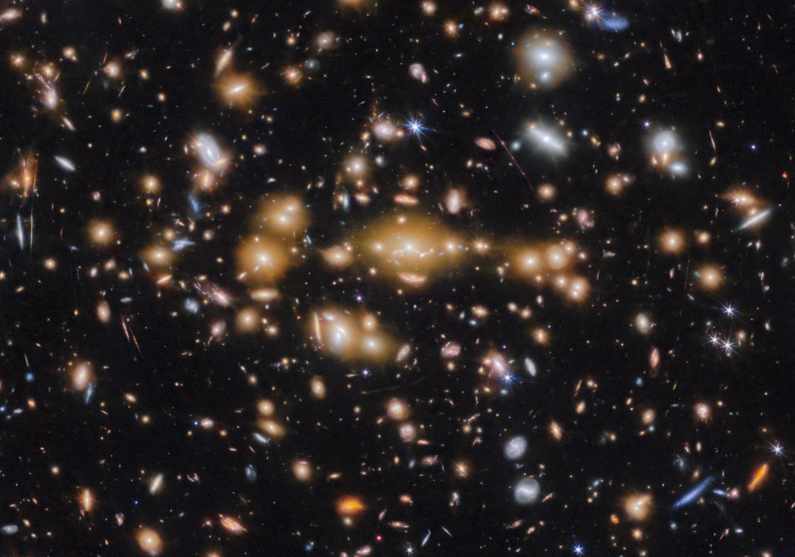
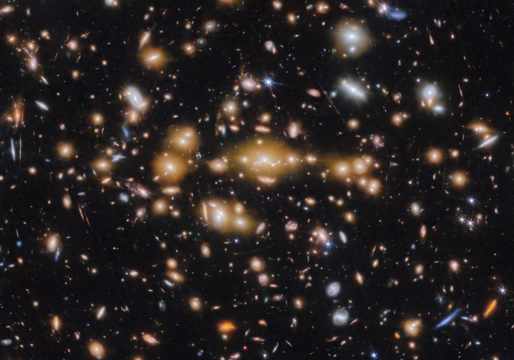

 


VENUS
VENUS is a multi-epoch Large Treasury program #6882 spanning JWST Cycles 4 and 5, awarded nearly 300 hours as the second largest JWST program to date. Led by PI Seiji Fujimoto (U. Toronto) and co-PI Dan Coe (STScI), VENUS is the first wide-area (~0.2 sq. deg, 5σ ≈ 28 mag) lensing cluster survey with JWST. The program is designed to reveal distant galaxies, AGN, stars, and supernovae at z ~ 4–20 that are intrinsically faint but appearently bright (thus spectroscopically feasible) due to gravitational lensing — providing unique laboratories to study the dawn of galaxies, black holes, and stars, in line with the core mission of JWST.
In Epoch 1 (Cycle 4), VENUS will conduct uniform, deep NIRCam imaging of massive galaxy clusters. In Epoch 2 (Cycle 5), the best 10 clusters, selected from the Epoch 1 "pre-imaging", will receive follow-up NIRSpec/MSA prism+G395M spectroscopy and additional NIRCam (F150W+F444W) imaging. Together with existing HST+NIRCam data, this strategy delivers unprecedented legacy fields: 60 clusters observed with 10 NIRCam filters (~0.16 sq. deg) and time-domain lensing fields (~0.13 sq. deg) for the entire community.
Key science goals include: (1) tracing the emergence of the earliest galaxies and star clusters; (2) spatially resolving early galaxies down to parsec scales; (3) measuring the mass and growth of the first black holes and faint AGN; and (4) discovering lensed individual stars and supernovae at high redshift to test the initial mass function. All data (images, catalogs, lens models) will be released immediately to maximize community access and scientific discovery in the JWST era.